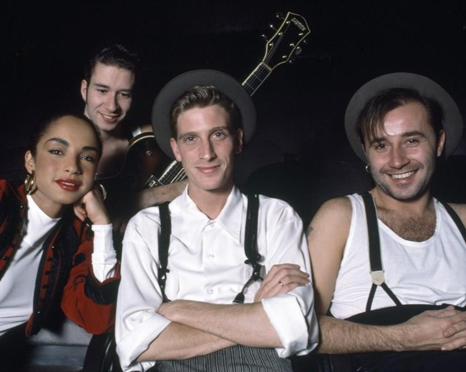
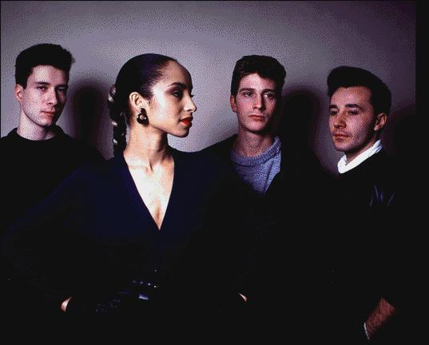

Sade nació el 16 de enero de 1959 en Ibadan, Nigeria. Su padre, Adebisi Adu, era profesor de economía, mientras que su madre, Anne Hayes, era una enfermera inglesa. Cuando tenía cuatro años, sus padres se separaron y se trasladó junto a su madre y su hermano mayor a Inglaterra, donde creció en las cercanías de Colchester, en el condado de Essex.
Durante su adolescencia desarrolló un profundo interés por la música soul estadounidense, influenciada por artistas como Curtis Mayfield, Donny Hathaway y Bill Withers. Sin embargo, su primera orientación profesional no estuvo relacionada con la música: se trasladó a Londres para estudiar diseño de moda en St Martin's School of Art. Durante ese período también trabajó ocasionalmente como modelo.
El comienzo de su carrera musical

Su acercamiento profesional a la música ocurrió de manera gradual. Un grupo de antiguos compañeros le propuso participar como vocalista en una banda que necesitaba una cantante. Posteriormente se incorporó a Pride, un grupo londinense de funk latino con el que comenzó a presentarse en distintos escenarios del Reino Unido.
Durante sus actuaciones con Pride, Sade empezó a destacarse por sus interpretaciones de jazz y por su presencia escénica. Una de las canciones que interpretaba junto a un pequeño grupo de músicos era Smooth Operator, composición que despertó el interés de representantes de distintas discográficas.
En 1983, después de un período de negociaciones, firmó un contrato con Epic Records bajo una condición fundamental: continuar trabajando junto a tres de sus compañeros de Pride, Stuart Matthewman, Andrew Hale y Paul Spencer Denman. Así nació la formación musical conocida como Sade, que tomó el nombre artístico de su cantante principal.
Reconocimiento internacional
En 1984, la banda publicó su primer álbum de estudio, Diamond Life, que rápidamente obtuvo reconocimiento internacional. El disco incluyó canciones como Your Love Is King, Smooth Operator y Hang On to Your Love, que contribuyeron a establecer su identidad musical y a posicionarla dentro de la escena internacional.
Durante los años siguientes publicaron Promise (1985) y Stronger Than Pride (1988), consolidando su popularidad con una propuesta que combinaba elementos del jazz, el soul y el pop contemporáneo.
La década de 1990 estuvo marcada por el lanzamiento de Love Deluxe (1992), un álbum que profundizó el carácter atmosférico e introspectivo de su música. Sin embargo, después de esta etapa, la banda atravesó un período de menor actividad discográfica.
Después de varios años sin publicar material de estudio, Sade regresó en 2000 con Lovers Rock, un álbum que presentó una sonoridad más íntima y que obtuvo una importante recepción internacional. Diez años más tarde, en 2010, publicó Soldier of Love, su sexto álbum de estudio.
Una trayectoria a su propio ritmo

A diferencia de otros artistas de su generación, Sade mantuvo una relación distante con la exposición mediática y desarrolló su carrera sin seguir un ritmo constante de lanzamientos. La cantante ha expresado en distintas oportunidades que prefiere publicar música cuando siente que tiene algo significativo para comunicar.
Su trayectoria demuestra que es posible sostener una identidad artística reconocible sin depender de la presencia permanente en los medios. A lo largo de más de cuatro décadas, Sade construyó una obra que continúa conectando con distintas generaciones de oyentes.